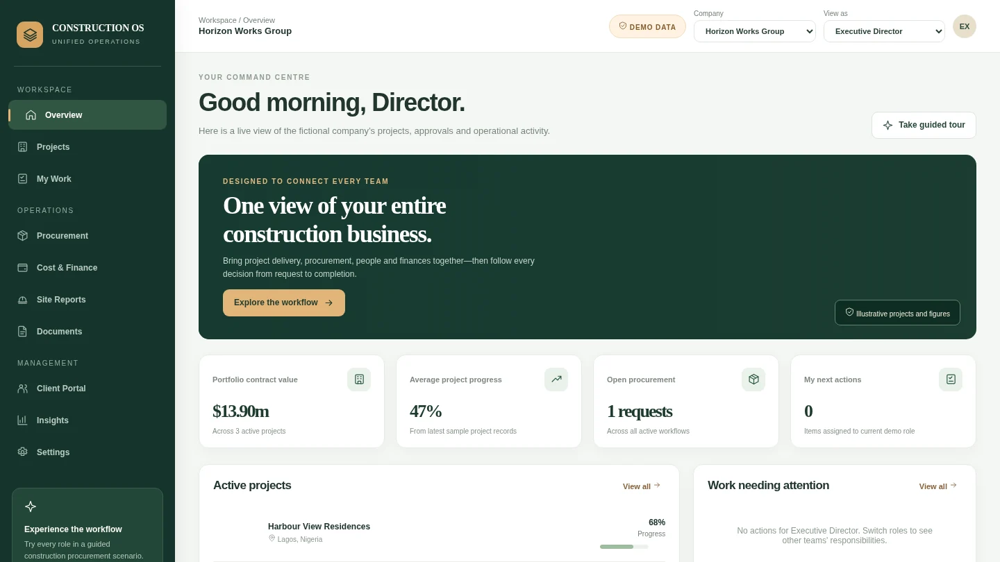
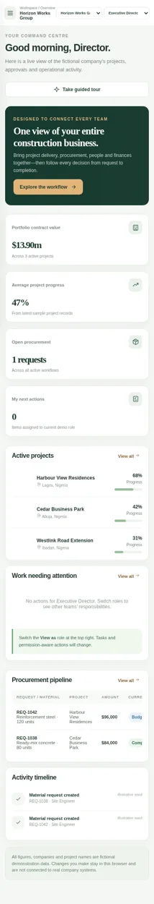

Create a request
Enter as a simulated Site Engineer and record the material needed for a project.
Every construction project creates a chain of decisions. TEKTON connects the site, procurement, commercial teams and leadership in one traceable workflow.
A material requirement enters the project record, with its quantity and supporting context.
This is the actual interactive demonstration interface. Open it to explore projects, cost controls and departmental handoffs using fictional data.


Explore two fictional construction companies, simulated departmental roles, and linked procurement or variation decisions in a shared project record.
The interactive demonstration isn't just a dashboard. Create one material request, move through the responsible departments, then see its sample project cost impact.
Enter as a simulated Site Engineer and record the material needed for a project.
Switch between project, quantity-surveying, procurement and finance roles with guided next steps.
Review the workflow history and how the fictional costs appear in project reporting.
A construction project doesn't operate in separate boxes. The site needs procurement. Procurement needs budgets. Finance needs evidence. Management needs the full picture.
Progress notes, photographs, material needs, and issues can live in separate chats, files, and reports.
WORK HAPPENS IN THE FIELDRequests pass between departments without one clear owner, status, budget check, or decision history.
DECISIONS HAPPEN BETWEEN TEAMSReporting becomes an exercise in collecting information rather than seeing what needs attention.
LEADERS NEED CLARITYExplore the workspaces planned for the platform. Each one connects to the same projects, people, documents, and decisions.
Bring schedules, milestones, site reports, documents, and responsibilities into one project record.
Available to explore: project and cost views, procurement, variations, reports and simulated roles. Planned beyond the demo: full workforce, quality and production-grade enterprise integrations.
Follow one material request from site to approved purchase and receipt. Each department sees only the next decision it needs to make.
The site engineer submits a material request against a specific project and work package, including quantity, required date and supporting information.
The same software foundation can be configured for smaller contractors, regional engineering teams and larger construction groups.
Coordinate project work, field reports, suppliers and budget decisions without building your entire process around spreadsheets and scattered messages.
Designed to support growing businesses and established enterprises from the same core product—without building a separate system for every customer.
A shared SaaS platform where companies can set up their own workspace, choose the modules they need, and subscribe as they grow.
A company-branded experience with custom workflows, integration options and deployment choices for more complex organizations.
Construction work involves sensitive commercial information and important approvals. Our product architecture is designed around control, traceability and flexibility.
Planned organization and project-level permissions mean that users only see the work they are authorized to access.
Connect an approval to its request, documents, decision-maker and timeline, rather than relying on memory or chat history.
One configurable codebase, designed for SaaS subscriptions, enterprise branding and future integration with existing tools.
These are platform architecture objectives, not claims of certification or production security controls in the current demonstration.
Start with one business problem. Map the teams, approvals, documents and decisions involved before discussing a broader rollout.
This enquiry tool prepares a message you can copy or email yourself. No sales inbox or automatic submission is connected yet.Where are construction handoffs being lost?
Procurement, variations, site reports or cost control.
Review modules, departments and existing systems.
Understand what the interactive demo shows and how the proposed product is intended to evolve.
Experience the demoPrepare a pilot enquiry on the planning page. You can copy the message or open your email application. No automatic submission or verified sales inbox is connected.
Yes. Explore the fictional company configuration, sample document/evidence summaries and printable project reports. They use browser-local sample data rather than production accounts or uploaded documents.
No. The role picker is a demonstration control showing proposed departmental responsibilities. It is not real authentication or a production authorization boundary. Only fictional data should be used.
Open the demo and choose Start guided workflow. Submit a material request as Site Engineer, then use Continue as next department to progress it. The last stage links to the cost summary.
Not yet. This website presents the product vision and links to an interactive, browser-based demonstration. The demo has working simulated workflows and sample data, but it is not connected to a production database or a real customer account system.
Explore executive dashboards, project BOQ and schedule views, construction variations, procurement, costs, site reports, documents, client views and insights. Switch between simulated roles to move material requests and change orders through their approval stages. Actions affect demo data in your browser.
Yes. Open a sample project to explore illustrative BOQ cost codes, milestone scheduling and variation history. In Variations, the guided change order moves through technical assessment, QS costing, management authorization, client consent and final application. Only an applied change updates the fictional budget.
Yes. The Procurement demonstration includes fictional supplier quotations, selection reasoning, delivery-note references, partial and disputed receipt scenarios, and simulated invoice matching. No purchase orders are sent to vendors and no payments are processed.
No. The architecture is modular. Smaller teams can focus on the essentials while more complex companies can configure additional operational modules, workflows and permissions.
That is part of the planned enterprise edition. The design supports customizable logos, colours, domains, departments and approval rules, with separate hosting options where appropriate.
No. The experience uses fictional sample companies and projects. Demo changes are stored locally in your browser and are not an authorized environment for client documents or sensitive financial information.
Not necessarily. The product is designed to make construction workflows more connected and to integrate with existing systems where that delivers more value than replacing them.
Discover a simpler path from site requests to business decisions. Enter the interactive TEKTON environment and experience the connected workflow firsthand.